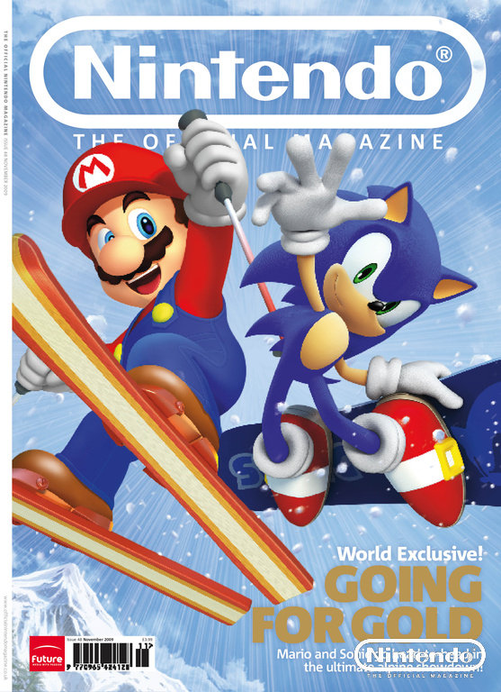

🏠 首頁
📁 未知版塊
MSOWG ONM-48期評論預告
👤 binyi
🕐 2009-09-24 08:35:08
9月25日發售的第48期 (最新一期)Official Nintendo Magazine雜誌內容，將有Mario & Sonic at the Olympic Winter Games (瑪俐歐與索尼克在溫哥華奧運)的「Wii、NDS平台評論/評分」。
至於是否有其他情報，就等待雜誌的發售囉。
封面:

附件: screenshot.jpg
👤 aoifh
🕐 2009-09-24 09:34:06
Wii大概摸清楚了
比較期待NDS的評論報導
遊戲快上市了，不曉得這次的評分會是如何[:baozi3:]